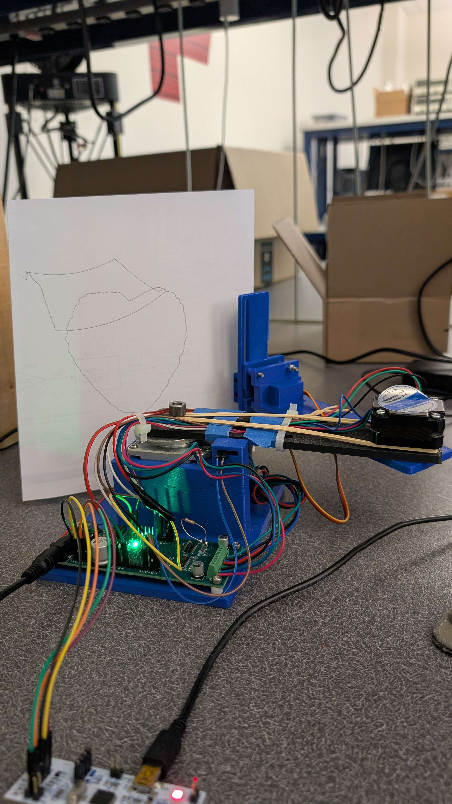
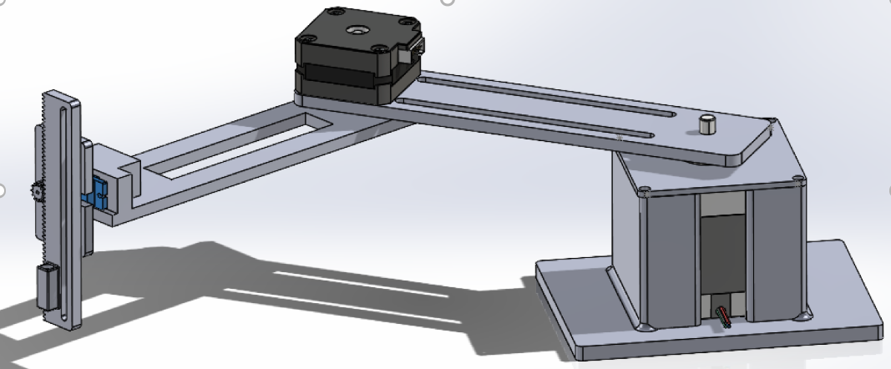
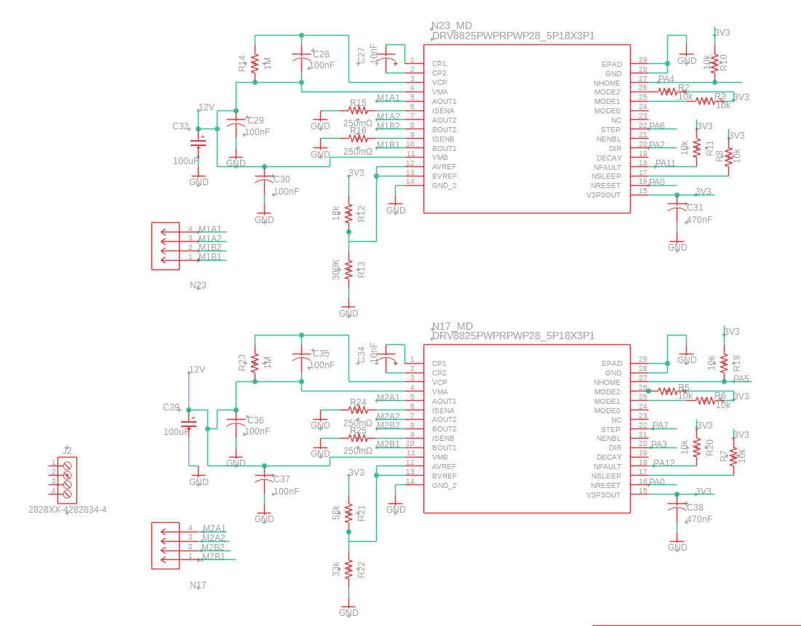

Table of Contents
- Overview
- Major Hardware
- Software Implementation
- Mathematical and Physical Modeling
- Appendix, Future Work, and Final Notes
1. Overview
This report summarizes the design, implementation, and validation of our 3 DoF plotter robot arm for ME-507. The system combines mechanical fabrication, embedded firmware on an STM32F411, and high-level preprocessing/postprocessing scripts in Python and MATLAB to convert drawings into smooth joint trajectories.
Mechanical system
- Links & joints: Two revolute joints (θ₁, θ₂) plus one prismatic “pen” servo (Z-axis).
- Actuators: NEMA-23 and -17 stepper motors (1/32 microstep) for the two rotary joints, and a 5 mm-throw servo for pen up/down.
- Structure: 3D-printed link bodies with carbon-fiber stiffening rods (space reserved here for a CAD rendering).
Figure 1‑1. Physical prototype of the 3 DOF plotter arm

Firmware & control
- Microcontroller: STM32F411CEU6 running HAL-based C code (STM32CubeIDE).
- Motion engine:
- Homing via dual limit switches
- Catmull–Rom spline interpolation between waypoints
- Timer-driven step pulses on TIM3, servo PWM on TIM1
- Safety & sensing: Ultrasonic sensor for obstruction detection (HC-SR04) and “kill switch” via user button
High-level preprocessing
- Python code (
ImageToAngles.py):- Raster → binarize → skeletonize
- Depth-first graph walk to extract pixel path
- Down-sample (–px-skip, –min-dist) to control point count
- Inverse kinematics →
{θ₁, θ₂, z}list
Validation & plotting
- MATLAB code (
verify_angles.mlx):- Forward kinematics of each
{θ₁, θ₂}pair - Overlay on original image to verify fidelity
- Generate 2D trajectory plots
- Forward kinematics of each
We found that simple contour extraction produced thick “bubbles,” so we switched to skeleton thinning to get a single-pixel path.
Figure 1‑2. MATLAB validation path showing sketch shape

2. Major Hardware
2.1 Design of the Robot / Contraption
The plotter is a planar arm with two revolute joints (θ₁, θ₂) and a prismatic Z-axis for pen lift. Key design decisions:
- Planar 3-DOF geometry → simple IK and no wrist singularity
- SolidWorks & Fusion 360 CAD for precise bearing, motor-flange, and sensor alignment
- 3D‑printed PLA links (L₁ ≈ 150 mm, L₂ ≈ 140 mm) with embedded carbon‑fiber rods
- Integrated bosses for limit-switch brackets and cable routing
Figure 2‑1. CAD rendering of the 3-DOF plotter arm and base

Joint layout
| Axis | Actuator | Notes |
|---|---|---|
| θ₁ (Base) | NEMA‑23 stepper | 2.8 Nm holding; drives full arm sweep |
| θ₂ (Elbow) | NEMA‑17 stepper | 0.59 Nm holding; drives fore‑arm link |
| Z (Pen) | 5 V Servo | Rack‑and‑pinion pen lift |
Constraints: elbow backlash, 180° servo throw, and torque at full extension.
2.2 Motors and Actuators
| Joint | Motor | Driver | Current | Resolution | Comment |
|---|---|---|---|---|---|
| θ₁ | NEMA‑23 | DRV8825 | 1.5 A | 6400 µsteps/rev | 1/32 step |
| θ₂ | NEMA‑17 | DRV8825 | 1.2 A | 6400 µsteps/rev | 1/32 step |
| Z | 5 V Servo | TIM1 PWM | — | 1 ms–2 ms pulse | Pen lift |
- Stepping: 2 kHz for drawing, 4 kHz for homing
- Servo PWM: TIM1‑Ch2 @ 50 Hz
2.3 Sensors
| Sensor | Mount | Purpose | MCU Pin(s) |
|---|---|---|---|
| HC‑SR04 | Z‑frame | Halt if distance < 35 mm | TRIG PB4, ECHO PB3 |
| Limit Switch 1 | Base | Home θ₁ | PB6 |
| Limit Switch 2 | Elbow | Home θ₂ | PB7 |
| FSR | Pen carriage | Contact force | ADC Pin |
Ultrasonic timing
Mechanical switches are NC style; debounced via debouncedSwitchPressed().
FSR channel was omitted on this PCB; planned for Rev‑B.
2.4 Custom PCB and Electrical Considerations
Our custom four-layer PCB is centered on a 12 V “VS” bus, distributed via a plated-through power plane and fused by a 5 A resettable polyfuse (F1). The incoming 12 V is protected against reverse polarity by a P-channel MOSFET (NTMS4177PR2G): the gate was originally mis-wired to the source plane (so the board would never power on), but was corrected by wiring it to ground. We also had to change the Not ON or OFF pin on the buck regulator (VR1).
Figure 2-2. 3D image of assembled 4‑layer PCB

- 4‑layer board with 12 V VS bus, 5 A polyfuse, and PFET reverse‑polarity switch
- LM2576HV buck (12 V→5 V) and NCP1117 LDO (5 V→3.3 V)
Figure 2-3. Voltage regulators and MCU schematic

- STM32F411CEU6, SWD header, UART debug, status LED
- Two DRV8825 modules: 0.25 Ω sense, 1/32 step, fault LEDs
Figure 2‑4. DRV8825 stepper‑driver schematic

Figure 2‑5. Board Layout

3. Software Implementation
Our software stack is divided into three layers:
- Embedded C Firmware on the STM32F411CEU6
- Python Preprocessor (
ImageToAngles.py)
- MATLAB Validation Script (
verify_angles.mlx)
Each layer has a clear role—desktop tools handle heavy image and kinematic computation, and the MCU firmware executes a precomputed, collision-safe motion plan in real time.
3.1 Embedded C Firmware (STM32CubeIDE)
3.1.1 main.c Workflow
- DWT cycle counter enabled for microsecond timing in
us_sensor.c.
- 2 Limit switches on PB6, PB7 for homing.
- Ultrasonic sensor triggers immediate motor disable if an object is detected within 35 mm.
3.1.2 Motion Engine (motors.c)
- Microstepping at 1/32 (200 steps × 32) giving ~17.8 µsteps/°:
#define STEPS_PER_DEG1 (200.0f * 32.0f / 360.0f)#define STEPS_PER_DEG2 (200.0f * 32.0f / 360.0f) - Homing:
- Drive both steppers toward limit switches at 4 kHz
- Debounce via
debouncedSwitchPressed()
- Drive both steppers toward limit switches at 4 kHz
- Drawing:
- Build Catmull–Rom tangents (
buildTangents())
- For each segment, subdivide based on max Δθ = 0.05°
- Interpolate with
hermite()
- Call
newsendJointAngles(θ₁, θ₂, Z)which:
- Raises/lowers pen (
moveServoPulse())
- Computes step counts and direction pins
- Starts TIM3 compare interrupts
- Polls
steps_remainingin a WFI loop until both axes are done
- Raises/lowers pen (
- Build Catmull–Rom tangents (
- Interrupt-driven stepping in
MOT_TIM3_IRQHandler():
- Toggles STEP pins at 50% duty
- Decrements
steps_remainingon each LOW edge
- Stops channel when done
- Toggles STEP pins at 50% duty
This design uses static arrays for spline buffers (no dynamic memory) and timer interrupts for precise pulse timing, ensuring smooth, blocking-free motion.
3.1.5 Workspace Mapping & Offset Angle Image To Angles Python (ImageToAngles.py)
ImageToAngles.py embeds the robot’s physical dimensions so every drawing is rescaled into a safe, reachable workspace before inverse kinematics:
| Constant | Value | Purpose |
|---|---|---|
L1, L2 | 5.816 in, 5.931 in | Link lengths used for IK |
OFFSET_T2_DEG | +147.5 ° | Offset so θ₂ = 0° aligns the elbow with the +X axis |
X_RANGE | (−6 in, −2 in) | Allowed X‑span for normalized drawing |
Y_RANGE | ( 5.5 in, 9 in) | Allowed Y‑span for normalized drawing |
During normalization every pixel point is uniformly scaled and translated:
This guarantees all generated waypoints fall inside the robot’s reachable XY envelope, while OFFSET_T2_DEG aligns the computed θ₂ with the actual elbow zero measured after assembly.
3.2 Python Conversion (ImageToAngles.py)
The Python script converts a PNG into a {θ₁, θ₂, Z} sequence:
- Skeletonization
skel = skeletonize(bw > 0) - Graph construction & DFS
- Build 8-connected adjacency of skeleton pixels
- Depth-first traversal to produce an ordered path
- Insert
z=1(pen-up) markers at stroke discontinuities
- Build 8-connected adjacency of skeleton pixels
- Normalization
# Uniformly scale into X_RANGE × Y_RANGEsx = (X2 - X1) / (max(xs)-min(xs))sy = (Y2 - Y1) / (max(ys)-min(ys)) - Downsampling
--px-skip N: take every Nth point
--min-dist D: remove points closer than D inches
- Inverse kinematics
def ik_xy(x,y):# Law of Cosines + atan2, apply OFFSET_T2_DEG - Output: writes
image_thetas.txtin
{θ1, θ2, z},{…},
All parameters are exposed via argparse, making it easy to tune point density and workspace mapping.
3.3 MATLAB Validation Script (verify_angles.mlx)
The MATLAB live script:
- Imports the
{θ₁, θ₂, Z}list
- Performs forward kinematics:
x = L1*cos(th1) + L2*cos(th1+th2-offset);y = L1*sin(th1) + L2*sin(th1+th2-offset); - Overlays the computed trajectory on the original image
- Plots time series of joint angles for debugging
- Exports high-resolution figures for report inclusion
This feedback loop verifies that the Python IK and spline interpolation produce accurate, drawable paths before flashing the MCU.
3.4 Integration & Workflow
- Design & export sketch to PNG
- To run:
!python ImageToAngles.py sketch.png [--px-skip N] [--min-dist D]
- Validate in MATLAB and adjust parameters
- Manually input the resulting
{θ₁, θ₂, Z}intojoint_inputs.c
- Rebuild and flash firmware via SWD
- Power on and watch the arm autonomously home → draw → home
By offloading all heavy computation to desktop tools, the firmware remains a lean, real-time motion executor.
3.5 Coding Style & Organization
- C++: Procedural, module-based (
main.c,motors.c,us_sensor.c) with minimal globals and no heap.
- Interrupts: Only for step pulses; main loop sleeps (
__WFI()) between moves.
- Python: Functional style with type hints, NumPy, and scikit-image for reliable image operations.
- MATLAB: Live script combining code, narrative, and figures for rapid iteration.
This clear separation of concerns ensures maintainability and ease of tuning.
4. Mathematical and Physical Modeling
4.1 Workspace Calculations
We calculated the workspace of our robot using measurements from the solidworks model to find where to draw.
Figure 4-1. Workspace Calculations

4.2 Forward and Inverse Kinematics
Inverse Kinematics
To convert each image pixel (x,y) into joint angles {θ₁,θ₂}, we use a 2-link planar-arm model. Given link lengths L₁ and L₂, the Law of Cosines provides θ₂, and θ₁ is found via arctangent functions with a fixed servo offset of +147.5° applied to θ₂. We also flag a “pen-up” when consecutive waypoint distances exceed a configurable threshold.
Forward Kinematics
For validation in MATLAB, we reconstruct the end-effector (x,y) path from {θ₁,θ₂}:
See appendix for the full code snippets. This confirms our planned trajectory matches the intended sketch.
4.3 Trajectory Smoothing
We employ Catmull–Rom spline interpolation on the joint-angle sequence, enforcing a maximum angular step of Δθ ≤ 0.05°. This ensures:
- Smooth curvature that still passes through each node
- Consistent velocity profiles without sudden direction changes
4.4 Subsampling and Filtering
Our Python preprocessor offers:
--px-skip N: Keeps only every Nth pixel, reducing waypoints.--min-dist D: Removes points closer than D mm in real-world space. To reduce overlapping contours that force the robot to go over the same section twice.
Benefits:
- Reduces MCU execution time
- Lowers mechanical wear by avoiding micro-jitter
- Preserves essential path fidelity
4.5 Sensor Data Interpretation
Ultrasonic Rangefinder
We measure echo round-trip time using the STM32 DWT cycle counter, then compute distance. If distance < 35 mm, the draw routine halts immediately.
Force-Sensing Resistor (FSR)
Though not wired in this prototype, the design reads FSR voltage on an ADC channel at 1 Msps, applies a moving-average filter, and triggers a pen-lift when pressure exceeds a set threshold.
Appendix: Code Snippets
5. Appendix, Future Work, and Final Notes
5.1 Files & Code Structure
Our repository is organized for clarity and reproducibility. Below is a high-level summary of key files:
| File | Purpose |
|---|---|
main.c | Application entry point, homing, and path execution |
motors.c | Stepper control, servo actuation, spline planner |
joint_inputs.c | Precomputed list of {θ₁, θ₂, Z} steps |
us_sensor.c | Ultrasonic sensor for obstacle detection |
ImageToAngles.py | Image → Skeleton → IK angles |
verify_angles.mlx | MATLAB trajectory validation via forward kinematics |
All embedded code was built using STM32CubeIDE for the STM32F411CEU6 (Black Pill). Python and MATLAB were run offline during the image pre-processing and validation phases.
5.2 Future Improvements
While our system performs well, several areas have clear upgrade paths:
- Improved prismatic Z actuator: Current servo has limited throw. Using a larger gear with a continuous servo would give greater range and responsiveness.
- Upgrade to 1/64 or 1/128 microstepping drivers: Would dramatically smooth curvature and fine details.
- Increasing Traces to Motors: Ensure current is not being limited by small traces.
- Replace I-sens resistor: Improve resistor dividors to optimize DRV8825 performance.
- ADC-enabled pressure sensing: Route spare STM32 ADC pins to header pads so force-sensitive resistors (FSRs) can be added. This would allow feedback when the pen contacts paper. Adding backup pins and test pins is always helpful. Add more ground pins than you think you need.
- Better mechanical stiffness: Current links show slight flex. A future version would use I-beam style 3D prints or laser-cut aluminum arms.
5.3 Lessons Learned
- PCB diligence never ends. Even with ERC/DRC passes, we still mis-wired a PFET gate and left the FSR ADC trace un-routed. A second independent checklist—or a “design-for-assembly” peer review—would have caught both errors.
- Subsample wisely. Too many waypoints produce audible jitter and lost steps; too few distort circles into octagons. Pixel-skip and distance-prune parameters must be tuned together.
- Mechanical play shows up in code. Link flex and coupling backlash required a larger pen-up clearance and forced us to overshoot splines slightly to hit endpoints.
- Always budget torque. The NEMA-17 elbow was borderline at full extension; upgrading to a higher-torque model or adding counterweights would improve repeatability.
- Careful for Servo range Our 180 ° micro-servo barely cleared the page; a leadscrew or longer rack would give more z-travel headroom.
- Version-control your firmware AND tool scripts. A stray change to
ImageToAngles.pybroke an old drawing until we traced the commit.
- Document while you build. Taking photos and jotting notes during each rework step made this final report far easier to assemble.
5.4 Example Trajectory (Placeholder)
This trajectory is plotted in MATLAB and used as input to the motorsRunSplinePlan() routine on the STM32.
5.5 Closing Remarks
This project demonstrates a full-stack mechatronic system: from user-drawn images to precision mechanical output. It highlights not only motion planning and control but also system-level integration between firmware, mechanical design, and external software tools.
With additional refinement, this 3-DOF plotter could serve as the basis for low-cost CNC drawing bots, laser engravers, or educational robotics kits.
*/
Authors
- Dylan Featherson, Tomas Franco, Charith Sunku
- Cal Poly San Luis Obispo, ME 405 – Spring 2025